MSc → PhD?
Rowan Cockett
August 2013
Outline
- Course work
- Richards equation
- Logically orthogonal mesh
- The future
Course Work
Courses
- Numerical Optimization (Friedlander)
- Sparse Matrix Computation (Greif)
- Numerical Solution of Differential Equations (Ascher)
- Linear Inverse Theory (Haber)
- Advanced Groundwater Hydrogeology (Beckie)
- Teaching and Learning in the Geosciences (Gilley)
- Computational Electromagnetics (Haber)
Numerical Optimization
- Exposed to optimization techniques
- Looked at objective functions
- Crash course in numerical operator creation
- Found my first block in a half-space
Find the Block
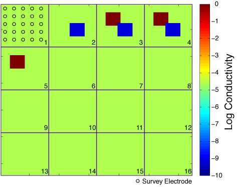
Objective Functions
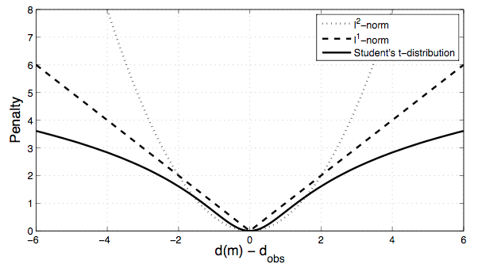
Found it!?
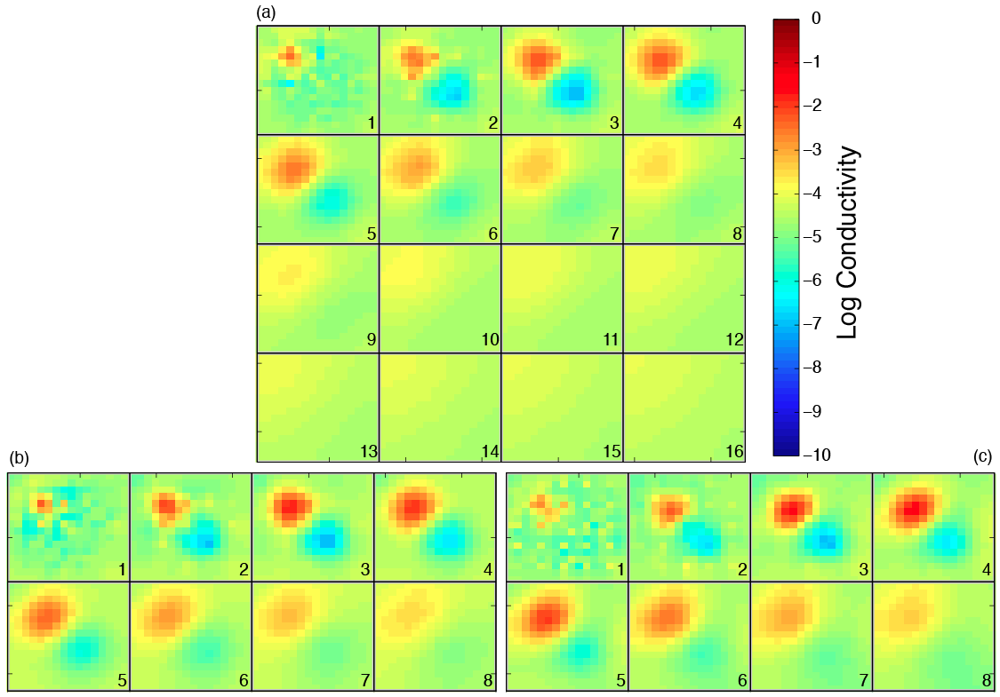
Sparse Matrix Computation
- Exposed to iterative solvers
- Looked into many different block solvers (CG, GMRES, ...)
- Crash course refresher into linear algebra
- Increased the speed of my DC inversion
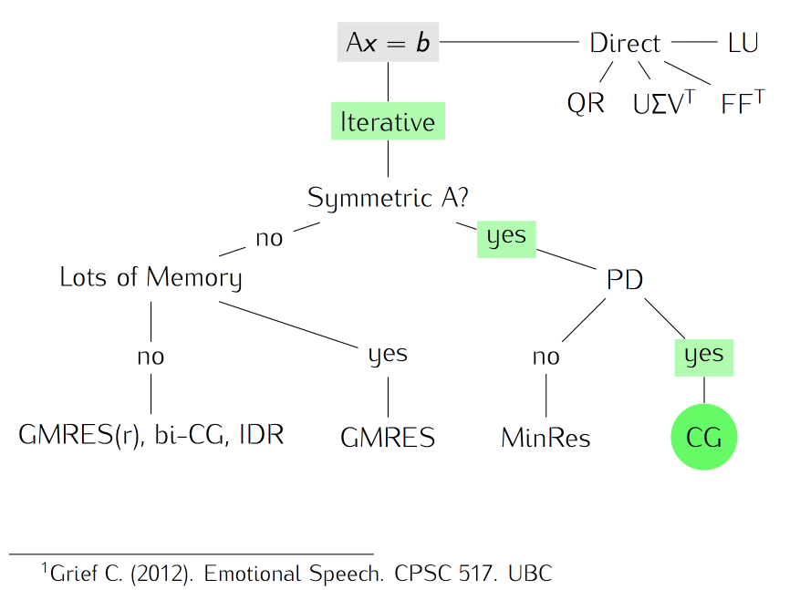
CG vs Steepest Descent
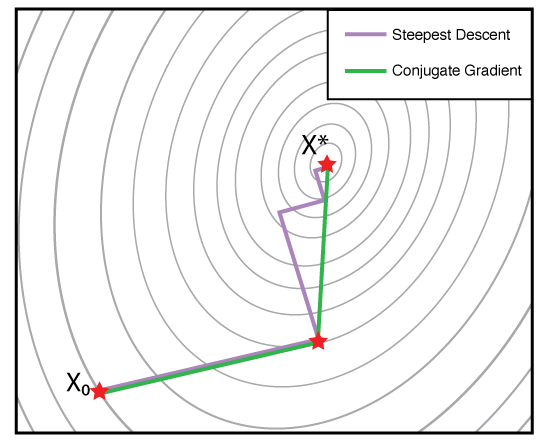
Decreasing Solve Time
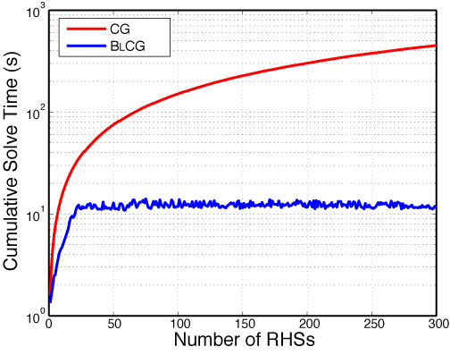
Numerical Differential Eqns
- Exposed to numerically solving differential equations
- Finite volume and difference techniques
- Explored Richards equation for ground water flow
- Compared multiple ways to solve the non-linear PDE
- Exposed to how to test my code
- Fictitious source tests
- Gradient tests
Finite Volume

Simulating in 2D and 3D
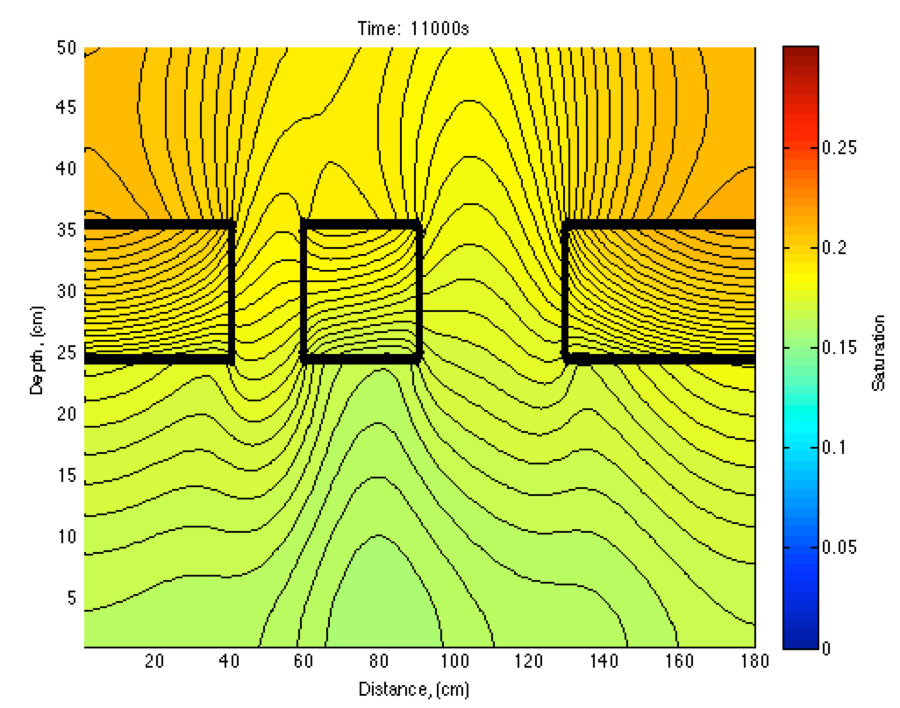
Inverse Theory
- (re)Exposed to general concepts in inverse theory
- Implemented an inverse problem in time
- Improved and generalized my MATLAB code base
- Calculation of derivatives (discretize then optimize)
- Learned details of large scale inversions
Cockett, R. & E. Haber. 2013. A Numerical Method for the Estimation of Distributed Hydraulic Conductivity Using Richards Equation. In Prep.
The setup.
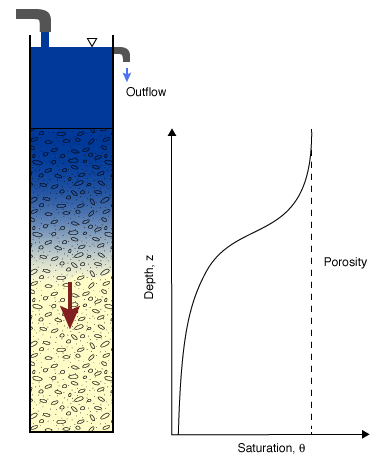
Going from time-lapse data...
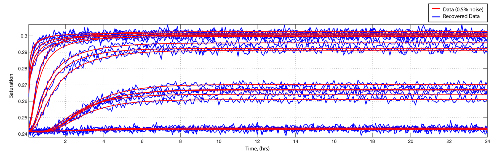
...to a model of the earth.
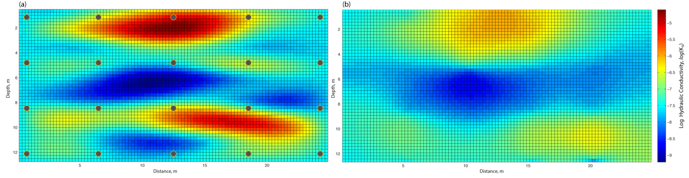
True vs. Recovered
Groundwater Hydrogeology
Annacis Island groundwater budget analysis
- (re)Exposed to concepts in hydrogeology
- Real-world & application based
Teaching & Learning
- Presentation, assignments, learning outcomes
- Opportunity to use my software: Visible Geology
Computational Electromagnetics
- Exposed to simulation using Maxwell's equations
- Wrote a frequency domain EM inverse code
- Further exposed to finite volume
- Wrote a finite volume package for LOM
L. Ruthotto ↔ R. Cockett ↔ E. Haber. 2013. Mimetic mesh generation and simulation for geophysical electromagnetics problems. In prep.
Differential Operators in 3D
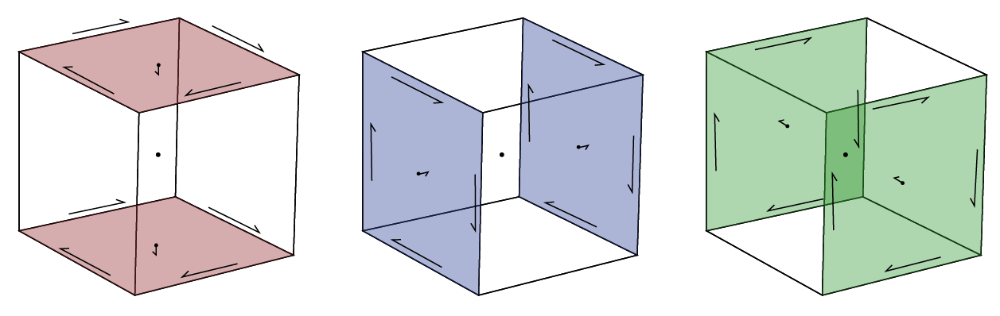
And then there were details...
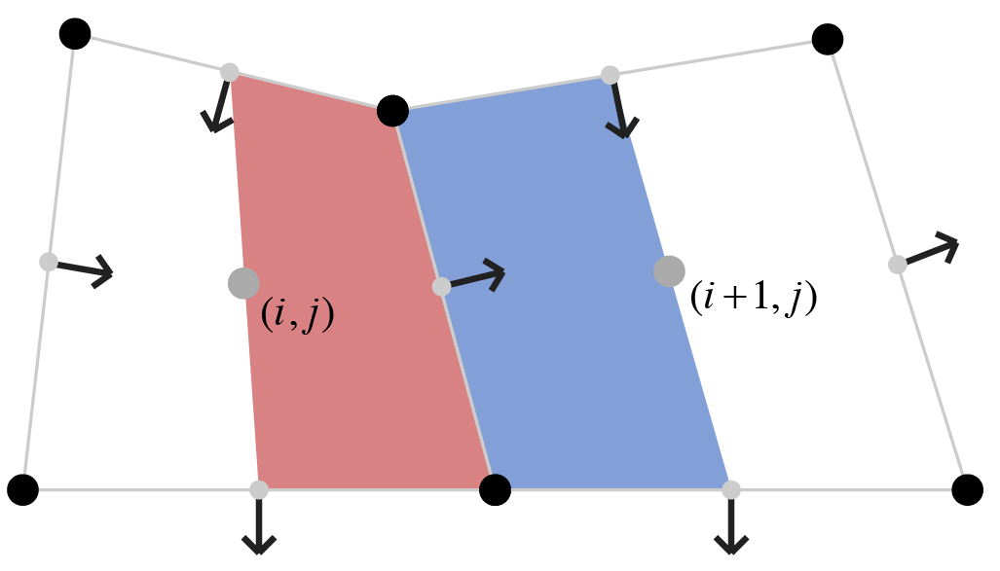
Aligning Meshes to Layers
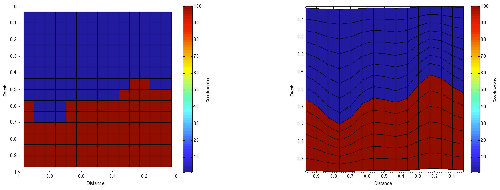
Padding Meshes to Infinity
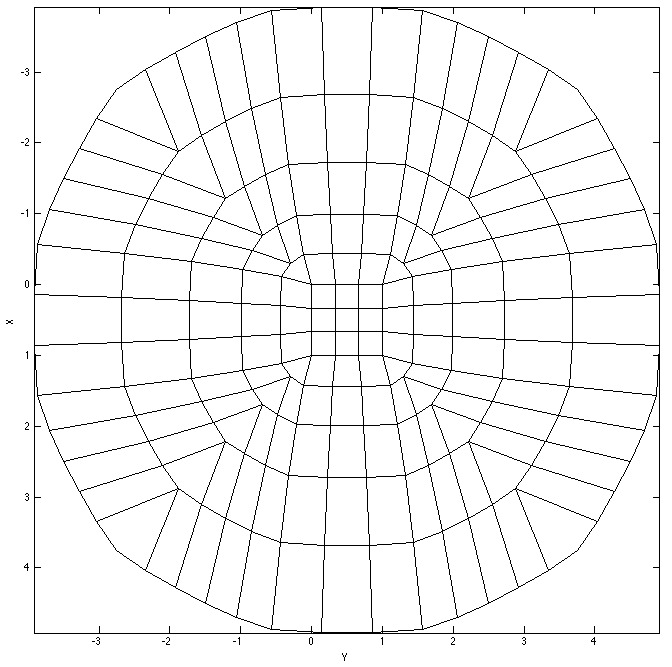
Simulating EM response on a LOM
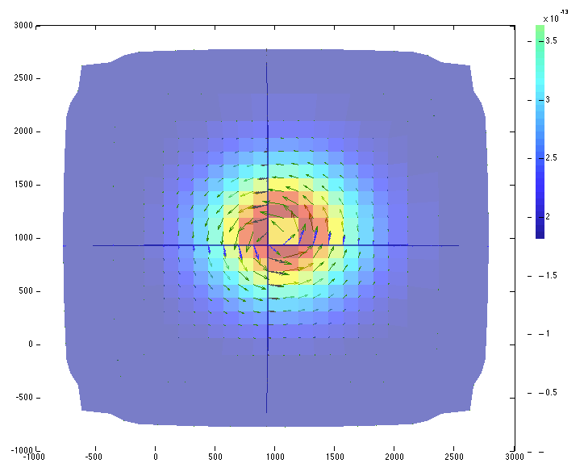
Richards Equation Inversion
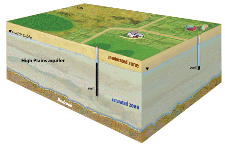Full Presentation
Logically Rectangular Mesh
Full Presentation
The Future
Joint Time-Lapse Inversions:
- Fluid flow and electromagnetics
- Empirical relations
- Correlating structures
- Simple (parameterized?) models
- Including geology
- Better predictions
- Better use of data